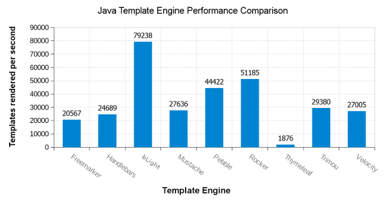

bLight
bLight is a minimalistic compile-time type-safe templating mechanism for use in Java 1.8+ applications.
Why another templating framework?
There are plenty of templating frameworks available for Java, so why invent another one?
bLight is:
- Safe
- Familiar
- Fast
- Flexible
- Small
Safe:
The primary driver for creating bLight was to reduce common template programming errors caused by having "Stringly" rather than strongly typed templates.
The usual pattern for integrating templating frameworks with application code involves tying application code to templates with a bunch of String(s). For example, this may involve creating and passing a map of String key / Object value pairs to the templating engine, The keys are hard-coded separately in both the Java code and templates and must match exactly. In addition to be a duplication of effort, mismatches caused by typographical errors will only be picked up at run-time.
After the top-level data has been made available to the template, a string notation is used for accessing and displaying properties within the top-level beans. Again, it is easy to make a typo here and not have it picked up until the application is run. In addition, use of this notation makes it harder to refactor the application's model beans, as developers are limited to using text searches within templates to try to track down where each bean or bean property is used.
In contrast, templates in bLight are Java code and use type-safe getters/setters to pass data between the controller and view. An incorrect call to a setter will result in a compilation error and will be picked up in the developer's IDE. The combination of having good Javadoc documentation and auto-complete functionality in IDEs further assists development. IDEs will also automatically process bLight templates when performing refactoring operations on application model classes, reducing the effort required and the chance of introducing errors.
Familiar
bLight offers an extremely low learning curve. Java developers don't need to learn another syntax - they already know how to write conditionals/loops/etc. in bLight as the templates are just Java code. Templates can be written and debugged using tools developers are already familiar with.
bLight allows both pre and on-demand compilation of templates. On-demand template compilation allows developers to change template content on the fly during development without requiring a restart of the application.
Fast
bLight templates are not run through a templating engine - they are compiled to Java classes when the application is built, and invoked directly by the VM. As a result, template execution is extremely fast. A comparison of bLight against some of the most popular templating frameworks is shown in the chart below.
Memory use is also very low, both in terms of static overhead and temporary objects generated during template execution. Each template only holds some basic state information and the application data it requires to produce the output. Template output is not buffered by default.

Comparison of bLight against the most popular Java templating engines.
Benchmark run on a Core i7-4790K (8x 4GHz), Windows 7, Java 1.8.0_131 64 bit.
See https://github.com/mbosecke/template-benchmark
Flexible
Just as for most templating frameworks, bLight supports generation of any text output format, such as plain text, HTML, XML, email, etc. It is simple to extend the template framework to add output-specific productivity methods. In addition, use of application utility classes is trivial, as the Java templates can directly call the classes.
Small
When using the typical deployment pattern (pre-compiled templates), bLight has a small deployment and memory footprint. The core library is only a few KB in size, with no external dependencies. There is also the option of just using the compiler with your own classes and having a zero footprint.
What's the catch?
Given that templates are essentially Java code, the syntax is more verbose than a dedicated templating language. The amount of typing required does, however, sit closer to a templating language than to string concatenation & escaping in pure Java.
bLight is not suitable for systems where templates are authored by end users during run-time, due to the security risk of having malicious code written directly into a template.
How does it work?
bLight templates are written as normal Java clases within your project. An example template is shown below.
package example.myorg.myapp.templates;
public class HelloWorld extends com.aleax.blight.AbstractTemplate
{
public void execute() throws java.io.IOException
{
/*Hello World!*/
}
}bLight treats multi-line comments inside a template's execute method as content which should be output when the template is run. In the example code above, the template produces the text "Hello World!" when run. Given that bLight is (ab)using Java comments to do something other than they were intended, templates must first be "compiled" before they can be run. This can be done either during a build or on-demand at run-time.